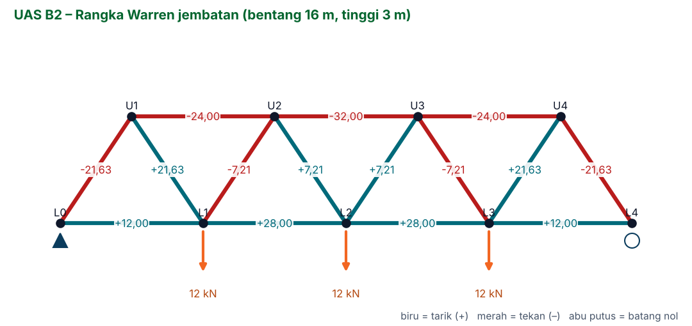

Minggu 16 • UAS berbasis kasus terintegrasi • CPMK-3 (6%) dan CPMK-4 (7%) = 13% nilai akhir • Ujian tertulis 100 menit • Ambang tuntas CPMK ≥ 70
A. Kisi-Kisi UAS
| CPMK / Sub-CPMK | Indikator | Level | Nomor soal | Poin |
|---|---|---|---|---|
| CPMK-3 / 3.1 | Sendi dalam dan balok Gerber | C2–C3 | A1–A2 | 6 |
| CPMK-3 / 3.2 | Portal statis tertentu | C3–C4 | A3, A5 | 6 |
| CPMK-3 / 3.3 | Portal tiga sendi (beban atap + angin) | C3–C5 | A4, B1 | 3 + 31 |
| CPMK-4 / 4.1 | Kestabilan, batang nol, titik buhul, Ritter | C3–C4 | A6–A10, B2 | 15 + 39 |
| Jumlah | 10 + 2 soal | 100 poin: CPMK-3 = 46, CPMK-4 = 54 (= 6% dan 7% nilai akhir) |
B. Simulasi UAS di E-Book
Bagian A – Soal Singkat (10 soal × 3 poin = 30 poin)
Momen lentur di sendi dalam selalu nol.
Pembahasan: Sendi tidak meneruskan momen.
Balok anak Gerber 6 m dengan q = 2 kN/m. Gaya di tiap sendi = … kN
Pembahasan: 2 × 6 ÷ 2.
Portal L: kolom 3 m dijepit, balok 2 m, P = 5 kN di ujung balok. MA = … kN·m
Pembahasan: 5 × 2.
Portal tiga sendi simetris L = 10 m, f = 5 m, q = 2 kN/m. H = … kN
Pembahasan: 2 × 100 ÷ 40.
Portal sendi–rol diberi angin di puncak kolom kiri. Kolom di atas rol …
Pembahasan: Rol tidak memberi gaya horizontal.
Rangka sendi–rol dengan j = 7. Agar statis tertentu, m = …
Pembahasan: 2 × 7 – 3.
Titik buhul tanpa beban dengan dua batang segaris dan satu batang lain: batang lain itu …
Pembahasan: Aturan batang nol 2.
Rangka segitiga Contoh 10.2 dengan beban 6 kN. F_AB = … kN
Pembahasan: 5 × 6 ÷ 10.
Ritter: R = 20 kN di L0, beban 10 kN di L1 (x = 4 m), tinggi 4 m. ΣM di U1 (4; 4) → F_L1L2 = … kN
Pembahasan: 20 × 4 ÷ 4.
Manual 50 kN, perangkat lunak 48 kN. Selisih = … %
Pembahasan: 2 ÷ 48 × 100.
Bagian B – Kasus Terintegrasi (2 kasus = 70 poin)
Kasus B1 – Gudang mini pupuk (31 poin, CPMK-3, C3–C5). Portal tiga sendi balok datar: sendi A (0; 0), sendi E (8; 0), kolom 4 m, sendi S di tengah balok (4; 4). Beban atap q = 3 kN/m; angin 4 kN ke kanan di B (puncak kolom kiri). (a) Hitung V_A, V_E, H_A, H_E. (b) Hitung momen di kedua sudut dan gambar BMD. (c) Sudut mana yang paling kritis dan mengapa? (d) Jika kapasitas momen izin profil 30 kN·m (data kasus), apa rekomendasimu?
Kasus B2 – Jembatan rangka Warren desa (39 poin, CPMK-4, C3–C4). Rangka Warren tanpa batang vertikal: titik bawah L0–L4 berjarak 4 m (bentang 16 m), titik atas U1–U4 di x = 2, 6, 10, 14 m setinggi 3 m; sendi L0, rol L4. Beban 12 kN di L1, L2, L3. (a) Periksa m + r = 2j. (b) Hitung reaksi. (c) Hitung gaya batang L0U1 dan L0L1 (titik buhul L0). (d) Hitung gaya U2U3 dan L1L2 dengan Ritter. (e) Sebutkan batang tekan terbesar dan usulkan cara memperkuatnya.
Kunci dan Pembahasan Bagian B
| Kasus | Kunci | Rubrik |
|---|---|---|
| B1 | Superposisi. Beban atap: V = 12 kN tiap kaki; H = 3 × 64 ÷ 32 = 6 kN (ke dalam). Angin: V_E = 4 × 4 ÷ 8 = 2 kN (↑), V_A = 2 kN (↓); H_A = H_E = 2 kN (←). Total: V_A = 10; V_E = 14 kN; H_A = 4 kN (→); H_E = 8 kN (←); periksa ΣFx: 4 + 4 – 8 = 0 ✓. Momen sudut kiri = 4 × 4 = 16,00 kN·m; sudut kanan = 8 × 4 = 32,00 kN·m (tarik sisi luar); M di S = 0. Sudut kanan kritis karena dorongan angin dan atap searah. 32 > 30 → tidak aman: perkuat sudut (haunch) atau ganti profil, atau tambah pengaku/ikatan angin (periksa angkur kaki kanan 8 kN). | Reaksi 10 • momen & BMD 9 • analisis sudut kritis 6 • rekomendasi 6 |
| B2 | (a) j = 9, m = 15, r = 3 → 18 = 18 ✓. (b) R = 18 kN tiap tumpuan. (c) Diagonal: panjang √(2² + 3²) = 3,61 m, sin = 0,832: F_L0U1 = –18 ÷ 0,832 = –21,63 kN (tekan); F_L0L1 = 21,63 × (2 ÷ 3,61) = +12,00 kN (tarik). (d) Potong panel tengah: ΣM di L2 (8; 0): 18 × 8 – 12 × 4 + F_U2U3 × 3 = 0 → F_U2U3 = –32,00 kN; ΣM di U2 (6; 3): 18 × 6 – 12 × 2 – F_L1L2 × 3 = 0 → F_L1L2 = +28,00 kN. (e) Tekan terbesar: batang atas tengah U2U3 (–32 kN); perkuat dengan profil lebih besar/ganda atau pengaku lateral untuk memperpendek panjang tekuk. | Klasifikasi 5 • reaksi 4 • titik buhul 10 • Ritter 14 • analisis & usulan 6 |

Gambar UAS-1. BMD kunci Kasus B1 (sisi tarik).

Gambar UAS-2. Gaya batang kunci Kasus B2 (kN).
C. Pengolahan Nilai, Ketuntasan, dan Tindak Lanjut
Skor UAS dipisah per CPMK: CPMK-3 = (A1–A5 + B1) ÷ 46 × 100; CPMK-4 = (A6–A10 + B2) ÷ 54 × 100.
Nilai akhir CPMK menggabungkan semua komponen RPS Bagian 7 (Partisipatif, Case Method, TBP, Tugas & Kuis, UTS, UAS).
CPMK tuntas bila ≥ 70; yang belum tuntas mendapat umpan balik terarah dan asesmen ulang ≤ 2 minggu setelah nilai diumumkan.
Dosen mengisi lembar evaluasi CPMK (persentase tuntas, penyebab, rencana perbaikan) untuk Rapat Tinjauan Manajemen jurusan (RPS Bagian 10).
D. Refleksi Akhir Semester
Bandingkan skala pemahaman saya di minggu 1 dan minggu 16: apa yang paling berubah?
Konsep mana yang paling saya butuhkan untuk Mekanika Teknik II (tegangan & lendutan)?
Kebiasaan baik apa (DBB rapi, cek ΣM, satuan) yang akan saya bawa ke semester berikutnya?